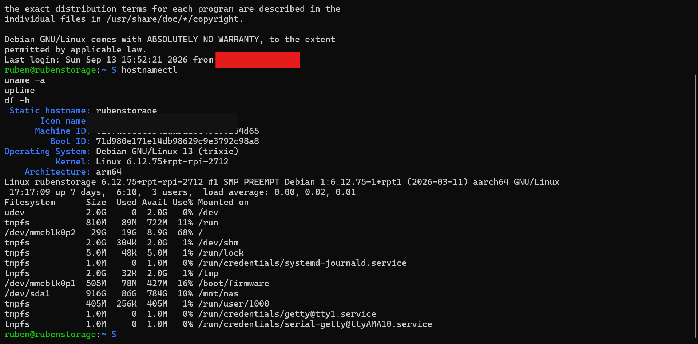

LINUX / SELF-HOSTED INFRASTRUCTURE
Raspberry Pi 5 Linux Systems Lab
Built and administer a Raspberry Pi 5-based Linux server for private networking, storage, containerized services, remote access, and media/photo applications.

SYSTEM OVERVIEW
Home infrastructure, treated like an engineering system
The project combines Linux administration, containerized services, private overlay networking, Windows/Linux file sharing, storage management, and remote troubleshooting into one always-on platform.
INFRASTRUCTURE
Linux host & containerized services


NETWORKING & STORAGE
Private access and cross-platform file sharing


SELF-HOSTED APPLICATIONS
Photo and music services


SKILLS DEMONSTRATED
What this project shows
Linux Administration
Service management, permissions, storage, shell usage and remote troubleshooting.
Networking
Tailscale private networking and Windows/Linux interoperability over SMB.
Containers
Docker-based deployment and operation of multiple self-hosted services.
Systems Integration
Combining hardware, storage, networking and application services into a reliable home platform.